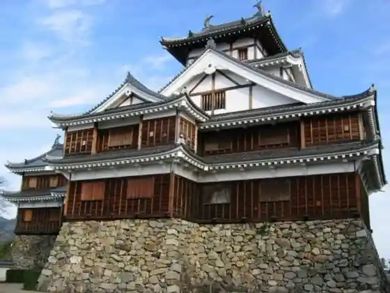
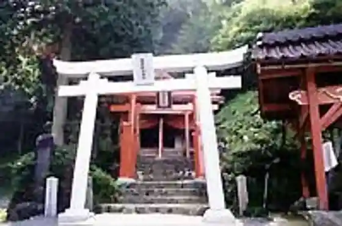
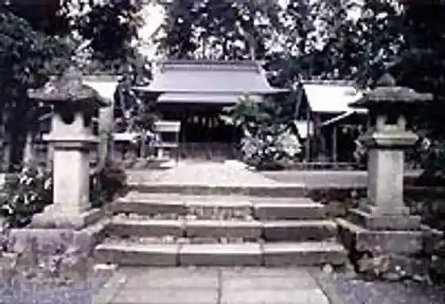

Motoise Ten Iwato Shrine
Fukuchiyama, Kyoto · 0773-56-2070 · Official / source link
Fukuchiyama Shiro (Fukuchiyama Shiro Tenshukaku)
Fukuchiyama, Kyoto · 0773-23-9564 · Official / source link

Oeyama Onidake Inari Shrine
Fukuchiyama, Kyoto · 0773-56-2070 · Official / source link

Hotel Roiyaruhiru Fukuchiyama & Supa (Fuku Sen Gen Yu)
Fukuchiyama, Kyoto · 0773-27-5000 · Official / source link

Motoise Gegu Toyoke Dai Shrine
Fukuchiyama, Kyoto · 0773-56-1560 · Official / source link

Yura no Garden
Fukuchiyama, Kyoto · Official / source link
Ohara Shrine
Fukuchiyama, Kyoto · 0773-58-4324 · Official / source link
Fukuchiyama Tetsudo Kan Fukureru
Fukuchiyama, Kyoto · 0773-48-9226 · Official / source link
Motoise Naigu Ko Dai Shrine
Fukuchiyama, Kyoto · 0773-56-1011 · Official / source link
Hosono Toge
Fukuchiyama, Kyoto · Official / source link
Futase Kawa Keiryu
Fukuchiyama, Kyoto · 0773-56-2070 · Official / source link
Fukuchiyama Zoo (Sandan Ike Park)
Fukuchiyama, Kyoto · 0773-23-4497 · Official / source link
Nikoniko Onsen
Fukuchiyama, Kyoto · 0773-23-2525 · Official / source link
Yaku no Highlands Shi
Fukuchiyama, Kyoto · 0773-38-0543 · Official / source link
Fukuchiyama Tourism Association
Fukuchiyama, Kyoto · 0773-22-2228 · Official / source link
Sandan Ike Park
Fukuchiyama, Kyoto · 0773-23-6324 · Official / source link
Roadside Station no Takumi no Sato Yaku no (Yaku no Ki to Shitsu no Kan)
Fukuchiyama, Kyoto · 0773-38-9226 · Official / source link
Yo Izumi Tera (Tamba Hagi Tera)
Fukuchiyama, Kyoto · 0773-22-3887 · Official / source link
Fukuchiyama Onsen Yoro Baths
Fukuchiyama, Kyoto · 0773-27-6000 · Official / source link
Ken Tatsuyama Koun Tera
Fukuchiyama, Kyoto · 0773-58-2273 · Official / source link
Fukuchiyama Jido Science Museum
Fukuchiyama, Kyoto · 0773-23-6292 · Official / source link
Fukuchiyama Miyako City Ryokka Botanical Garden (Sandan Ike Park)
Fukuchiyama, Kyoto · 0773-22-6617 · Official / source link
Oeyama no Ie Guriinrojji
Fukuchiyama, Kyoto · 0773-56-0095 · Official / source link
Tennei Tera
Fukuchiyama, Kyoto · 0773-33-3448 · Official / source link
Kyotodai Ro Garden Terasu (Dai Ro Shizen Kyuyo Village Center)
Fukuchiyama, Kyoto · 0773-33-2041 · Official / source link
Roadside Station no Takumi no Sato Yaku no
Fukuchiyama, Kyoto · 0773-37-1103 · Official / source link
Towa Shuzo Yugengaisha
Fukuchiyama, Kyoto · 0773-35-0008 · Official / source link
Choan Tera (Momiji Tera)
Fukuchiyama, Kyoto · 0773-22-8768 · Official / source link
Ubuya
Fukuchiyama, Kyoto · 0773-58-4324 · Official / source link
Fukuchiyama Tourism Association Rentasaikuru Jigyo
Fukuchiyama, Kyoto · 0773-22-2228 · Official / source link
Washi Densho Kan
Fukuchiyama, Kyoto · 0773-56-2106 · Official / source link
Nagata no Kogyo Danchi
Fukuchiyama, Kyoto · 0773-27-2002 · Official / source link
Kan'onji (Tamba Ajisai Tera)
Fukuchiyama, Kyoto · 0773-27-1618 · Official / source link
Daiun Memorial Museum (Daiun Village / Kyuhei Noe House)
Fukuchiyama, Kyoto · 0773-56-1102 · Official / source link
Yaku no Gembu Iwa Park
Fukuchiyama, Kyoto · 0773-37-1103 · Official / source link
to Takumi Iori
Fukuchiyama, Kyoto · 0773-22-6527 · Official / source link
Hozan Park
Fukuchiyama, Kyoto · 0773-37-1103 · Official / source link
Nippon no Oni no Koryu Museum Oni Bunka Kenkyusho
Fukuchiyama, Kyoto · 0773-56-1996 · Official / source link
Tensho Yamacho Hashi Tera
Fukuchiyama, Kyoto · 0773-57-0525 · Official / source link
Oeyama Onigawara Park
Fukuchiyama, Kyoto · 0773-56-2070 · Official / source link
Yakuno Town Kaseki Local History Museum
Fukuchiyama, Kyoto · 0773-38-1206 · Official / source link
Shimada Shrine
Fukuchiyama, Kyoto · 0773-24-7065 · Official / source link
Fukuchiyama Sato Taisei Kinen Art Museum
Fukuchiyama, Kyoto · 0773-23-2316 · Official / source link
Daigo Tera (Fukuchiyama)
Fukuchiyama, Kyoto · 0773-22-2317 · Official / source link
Fukuchiyama Ashida Hitoshi Memorial Museum
Fukuchiyama, Kyoto · 0773-27-9445 · Official / source link
Fukuchiyama Chisui Memorial Museum
Fukuchiyama, Kyoto · 0773-22-4200 · Official / source link
Fukuchiyama Tamba Seikatsu Koromo Kan
Fukuchiyama, Kyoto · 0773-23-6070 · Official / source link
Sanwa So
Fukuchiyama, Kyoto · 0773-58-2310 · Official / source link
Fukuchiyama Ryokan Hotel Kumiai
Fukuchiyama, Kyoto · 0773-22-1770 · Official / source link